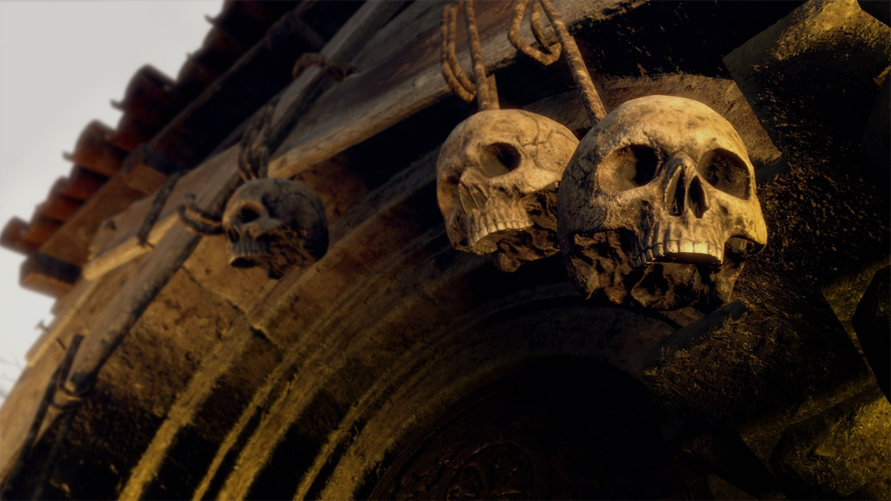
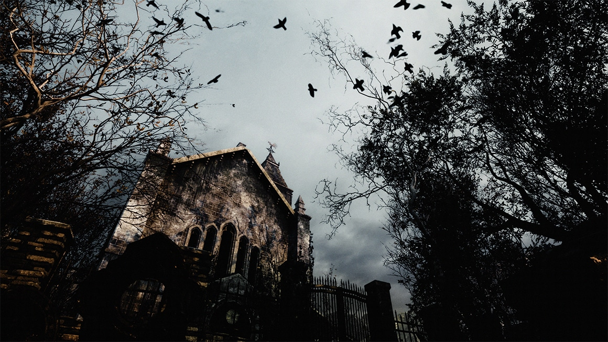
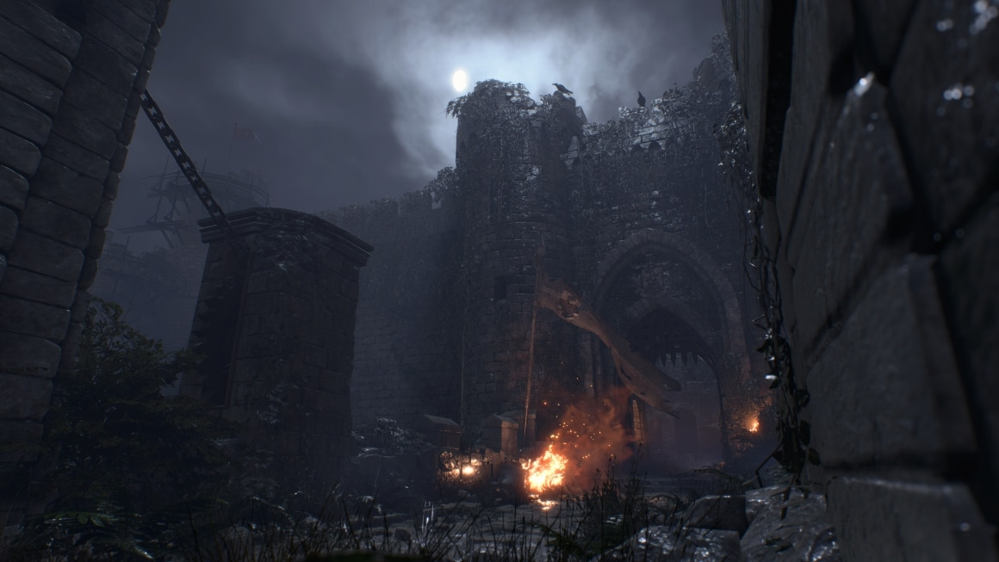
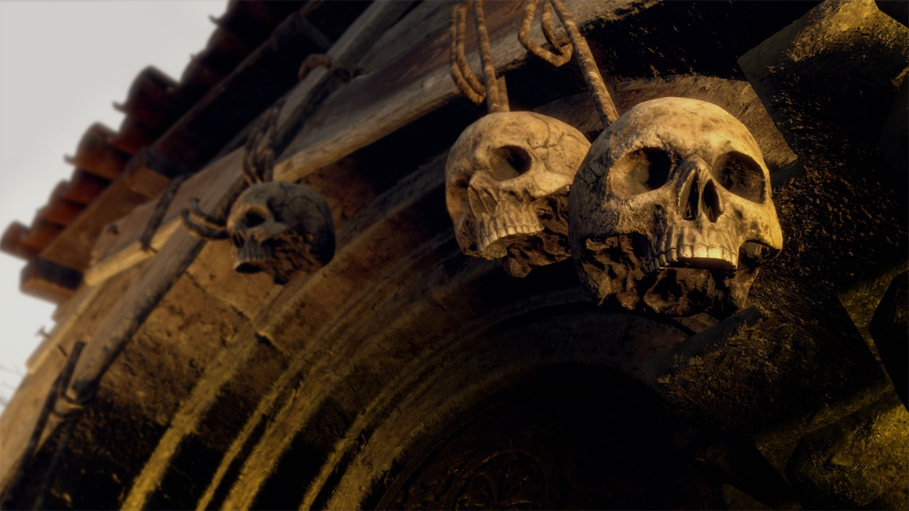
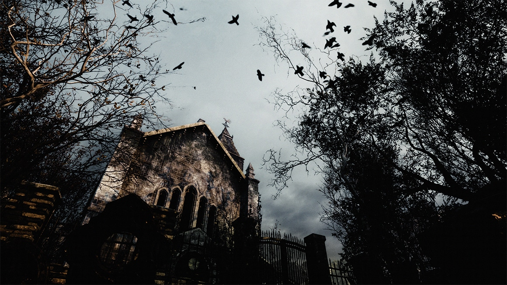
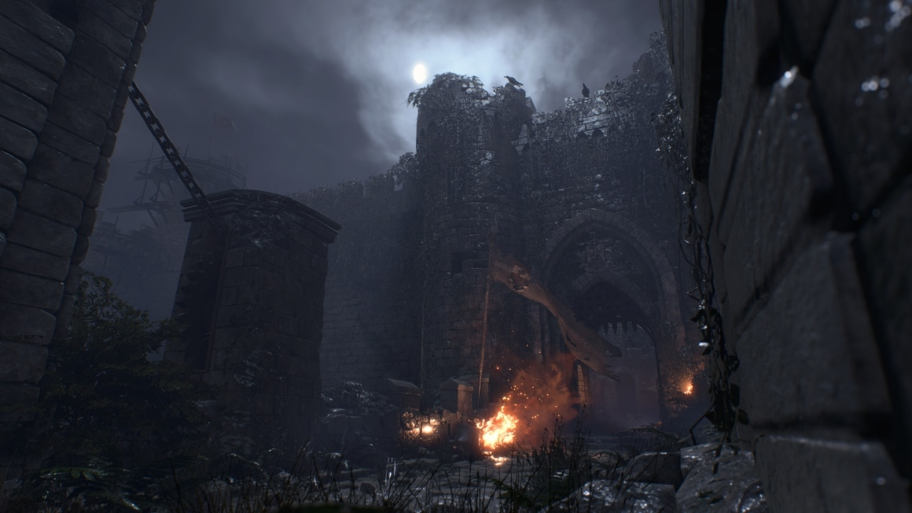

Já disponível
Mais de 9 Milhões de unidades
vendidas em todo o mundo!


SOBRE
Sobreviver é
só o começo
Resident Evil 4 é um remake do Resident Evil 4 original de 2005.
Reimaginado para 2023 para trazer horror de sobrevivência de última geração.
Resident Evil 4 preserva a essência do jogo original enquanto apresenta jogabilidade
modernizada,
enredo reimaginado e gráficos vívidamente detalhados para fazer deste o mais recente jogo de horror de
sobrevivência, onde a vida e a morte, o terror e a catarse se cruzam.

HISTÓRIA
Seis anos se passaram desde o desastre biológico em Raccoon City.
Leon S. Kennedy, um dos sobreviventes do incidente, foi recrutado como
agente,
respondendo diretamente ao presidente dos Estados Unidos.
Com a experiência de várias missões em suas costas,
Leon é enviado para resgatar a filha sequestrada do presidente.
Ele a rastreia até uma vila europeia isolada,
onde há algo terrivelmente errado com os aldeões.
E a cortina se abre nessa história de um ousado resgate e horror de sobrevivência extenuante.
PERSONAGEM
Leon S. Kennedy
Ashley Graham
Luis Serra
Ada Wong
Ganado
Doutor Salvador
Bitorez Mendez
Ramon Salazar

Ingrid Hunnigan
Mercador
Jack Krauser
Osmand Saddler
Fanático

Leon S. Kennedy
Leon S. Kennedy, um policial novato quando o incidente de
Raccoon City ocorreu há 6 anos, tornou-se um
agente trabalhando
diretamente sob o presidente.
Tendo passado por diversas missões desde o
incidente,
Leon
amadureceu significativamente.
Ashley Graham
A filha desaparecida do presidente dos Estados Unidos. Leon parte
para uma vila isolada na Europa em
busca dela.
Luis Serra
Leon se depara com este homem misterioso na vila. Ele parece saber algo sobre o paradeiro da filha do presidente dos Estados Unidos, mas será que ele é confiável...?

Ada Wong
Juntou-se a Leon durante o Incidente em Raccoon City, mas desapareceu durante a destruição do laboratório subterrâneo da Umbrella. Ela reaparece subitamente, mas seu verdadeiro objetivo permanece um mistério.


Ganado
Uma vez humanos, os Ganado veneram o líder de um culto religioso, e agora só há loucura em seus olhos...

Doutor Salvador

Bitorez Méndez
O chefe da vila que Leon investiga. Assim como os outros habitantes locais, ele venera o líder de um culto religioso.
Ramón Salazar
O oitavo líder da família Salazar, que tem governado a região onde Ashley parece ter desaparecido.
Ingrid Hunnigan
Uma coordenadora de missões que dá suporte aos agentes do governo dos Estados Unidos. Ela será o contato de Leon e o ajudará nesta missão.

Mercador
Um misterioso comerciante de armas que aparece em vários locais. Ele não apenas compra e vende armas e itens, mas também é capaz de aprimorar as armas que já estão em posse de Leon, bem como trocar por mercadorias especiais.
Jack Krauser
Um ex-membro das forças militares dos Estados Unidos.

Osmand Saddler
O atual líder de Los Iluminados, um poderoso culto religioso que há muito existe na região.
Fanático
LOCALIZAÇÃO
Uma vila europeia isolada cercada por uma floresta.
Há rumores de ser o lar de um culto misterioso.


 





JOGABILIDADE
Abra caminho entre os horrores ao seu redor utilizando
contra-ataques armados, golpes corpo a corpo e a nova manobra de aparar com a
faca, além de
várias outras ações à sua disposição. Garanta a sua sobrevivência
com táticas inteligentes, bom gerenciamento de itens e melhorias estratégicas de armas.
AÇÃO
Perspectiva em Terceira Pessoa
A perspectiva da câmera é em terceira pessoa, como você
se lembra do Resident Evil 4 original.
Com
gráficos atualizados,
a sensação de isolamento e estranheza do jogo original se
intensifica
ainda
mais. Os controles foram refinados para
padrões modernos que aprimoram a jogabilidade,
enfatizando
a luta do Leon pela sobrevivência.
PREVIEW
AÇÃO
Combate a Distância
Mire e atire através da Perspectiva em Terceira Pessoa. Mire
bem e escolha seus alvos com cuidado
para economizar
munição.
Enfraqueça seus inimigos atirando na cabeça e nas pernas,
dando
abertura para ataques corpo a corpo, e execute-os sem
consumir munição.
PREVIEW
AÇÃO
Ações com a Faca
Além de atacar, agora você pode aparar ataques
e finalizar
inimigos caídos utilizando a sua faca.
Porém, qualquer ação com a faca reduzirá sua durabilidade.
Só use quando for realmente
necessário; é melhor guardá-la
para circunstâncias extremas, ou você pode
acabar ficando
sem ter como se defender.
PREVIEW
AÇÃO
Combate a Distância
Mire e atire através da Perspectiva em Terceira Pessoa. Mire
bem e escolha seus alvos com cuidado
para economizar
munição.
Enfraqueça seus inimigos atirando na cabeça e nas pernas,
dando
abertura para ataques corpo a corpo, e execute-os sem
consumir munição.
PREVIEW
PREVIEW
GESTÃO DE RECURSOS
Maleta
Carregue armas, munições, ervas curativas e outros itens úteis na maleta.
O gerenciamento eficaz dos itens
no espaço limitado
fornecido é essencial para
a sua sobrevivência.
PREVIEW
GESTÃO DE RECURSOS
Criação de Itens
Além de combinar ervas curativas, agora você pode criar
munição e outros itens úteis.
Se a sua maleta estiver ficando cheia, criar itens é uma boa
maneira de liberar espaço.
PREVIEW
GESTÃO DE RECURSOS
O Mercador
Compre armas e itens, melhore suas armas ou negocie
mercadorias especiais na loja do Mercador.
O Mercador consegue até consertar facas quebradas.
*(Aplica-se apenas à faca padrão do Leon.)*
PREVIEW
GESTÃO DE RECURSOS
Negociação
Itens que não podem ser comprados com dinheiro normal
podem ser trocados por gemas.
CONTEÚDO BAIXÁVEL
O modo adicional frenético Os Mercenários será acompanhado de Caminhos Distintos, um novo modo de
história
que estrela
Ada como a personagem principal!
Você também poderá curtir a história principal no PlayStation®VR2 em Resident Evil 4 Modo VR, que já se
encontra
disponível!
DLC Pago | Já Disponível
Essa missão exige sigilo. Falhar não é uma opção.
Jogue como Ada Wong nesse modo adicional e testemunhe os eventos de Resident
Evil 4
pela perspectiva dela, o que responderá a perguntas que ficaram em aberto na
história principal.

HISTÓRIA
Antes mesmo de Leon S. Kennedy chegar àquele vilarejo amaldiçoado,
ela
estava lá. Sua missão? Obter o segredo mais sombrio do culto: o,
Âmbar.
CAMINHOS DISTINTOS
Jogabilidade
Além da ação já vista no jogo base com Leon, é possível utilizar
uma
arma de gancho para alcançar vários locais. A arma também pode ser
usada para eliminar inimigos de
longe e executar golpes corpo a corpo
a distância. Isso possibilita uma experiência de jogo mais
empolgante
e frenética.
DLC Gratuito | Já Disponível
como DLC gratuito!
Curta a jogabilidade dinâmica que surpreendeu os fãs na época e retorna para
surpreendê-los novamente!
OS MERCENÁRIOS
O que é "Os Mercenários"?
Os Mercenários é um modo baseado em tempo em que você
derrota
hordas de inimigos para marcar uma pontuação alta. A princípio, você
terá acesso a
somente algumas armas, então se quiser fazer muitos
pontos, é melhor saber quais armas são
melhores para cada situação.
Apenas o estágio do Vilarejo estará disponível no começo, mas
você
desbloqueará mais estágios e conteúdo à medida que jogar melhor.
OS MERCENÁRIOS
Orbes de Bônus de Tempo?
Lembre-se: sua pontuação só sobe enquanto houver tempo no
relógio.
Para ganhar mais tempo, use golpes corpo a corpo em seus inimigos ou
derrote
poderosos oponentes específicos. Os orbes verdes de tempo
vão prolongar o seu tempo, então
colete-os como parte da sua
estratégia.
OS MERCENÁRIOS
Modo Caótico
Ative o Modo Caótico para ganhar um bônus temporário no seu
ataque, velocidade e outros atributos. Você também ganhará mais
pontos ao atacar inimigos e mais
tempo ao derrotá-los. Seu medidor
do Modo Caótico se preenche com o tempo, ao derrotar oponentes
e
ao aparar ataques. Além disso, você também pode preenchê-lo
imediatamente ao coletar um
Orbe de Reforço do Modo Caótico!
PERSONAGENS
Personagens Jogáveis

Leon S. Kennedy

Luis Serra

Jack Krauser
Hunk
Ada Wong

Albert Wesker